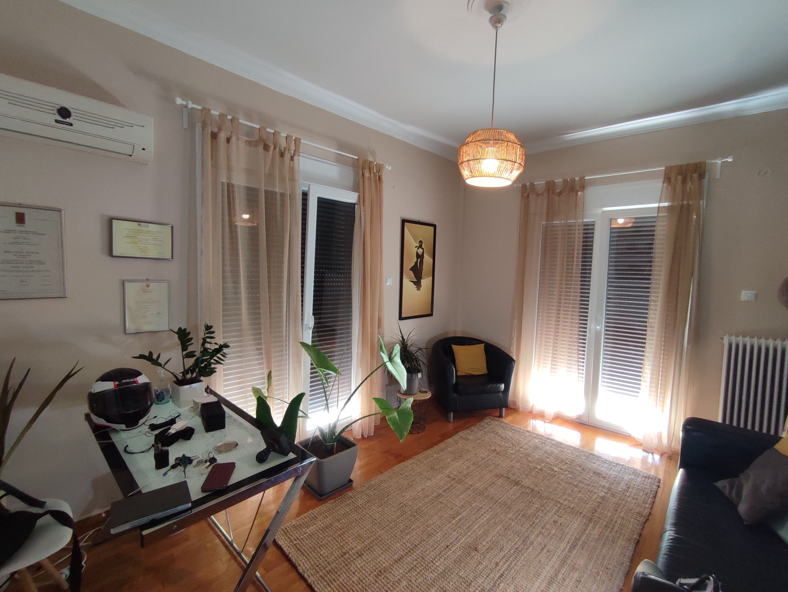
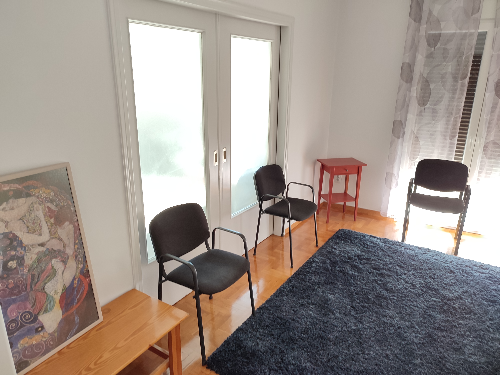
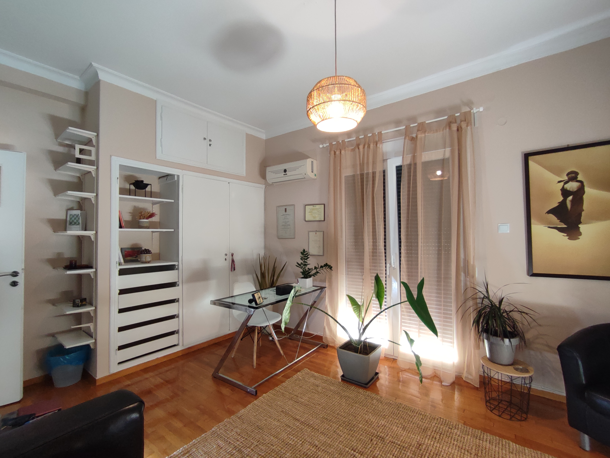

Ο χώρος μας





×

! Η σελίδα ειναι υπό κατασκευή !
Η Γεωργία Μιχαλαριά, απόφοιτη του τμήματος Ψυχολογίας του Παντείου
Πανεπιστημίου Κοινωνικών και Πολιτικών Επιστημών, από το 2004
εξερευνά διάφορα μονοπάτια της επαγγελματικής της πορείας. Μετά τις
μεταπτυχιακές σπουδές της στο Λονδίνο, κατέληξε σε ερευνητικό έργο
που δημοσιεύτηκε στο περιοδικό Autism, ενώ επέστρεψε στην Ελλάδα για
εκπαίδευση στο Gestalt Foundation. Τώρα, ως ψυχολόγος με ειδίκευση
στη συμβουλευτική και ψυχοθεραπεία, εργάζεται ιδιωτικά στη Νέα
Σμύρνη, κατέχοντας άδεια άσκησης επαγγέλματος ψυχολόγου από το 2004.
Με πολυετή εθελοντική προσφορά σε δομές ψυχιατρικής και
ψυχικής υγείας, στη Γραμμή Μαζί για το Παιδί και το Σύλλογο
Καρκινοπαθών ΚΕΦΙ, επεκτείνει την εμπειρία της. Παράλληλα, με
συμμετοχή σε σεμινάρια και συνέδρια, στοχεύει στην εξέλιξη και
εξειδίκευση σε νέες μεθόδους αντιμετώπισης κρίσιμων προβλημάτων που
αντιμετωπίζει ολοένα μεγαλύτερο μέρος του πληθυσμού.
Η ψυχοθεραπεία είναι ένας τρόπος να ανακτήσεις τον έλεγχο της ζωής σου και να μάθεις να χρησιμοποιείς το μυαλό και το σώμα σου σαν συμμάχους για την επίλυση των προβλημάτων σου.
Εξειδικευμένη αξιολόγηση των ψυχικών διαδικασιών και αναγνώριση προβλημάτων για την παροχή βέλτιστης ψυχοθεραπείας.
Η συμβουλευτική απευθύνεται σε ανθρώπους που επιθυμούν να αντιμετωπίσουν συγκεκριμένα ζητήματα στα οποία αναζητούν λύσεις σε σχετικά σύντομο χρονικό διάστημα.
Διαχείριση συγκρούσεων και κρίσεων
Βελτίωση επικοινωνίας
Διαζύγιο
Η ομαδική ψυχοθεραπεία είναι ένας τρόπος αντιμετώπισης των δυσκολιών και ανακάλυψης του εαυτού μέσα από τη συμμετοχή και την αλληλεπίδραση με μια ομάδα. Σε μια θεραπευτική ομάδα δημιουργείται μια δυναμική, που είναι κάτι παραπάνω από το άθροισμα των μερών που την αποτελούν.
Το Athens Therapy διοργανώνει κατά καιρούς βιωματικά / ψυχοεκπαιδευτικά εργαστήρια διάρκειας λίγων ωρών. Μείνετε σε επαφή με τα νέα μας, ώστε να ενημερωθείτε έγκαιρα για το επόμενο εργαστήριό μας.
Διαχείριση διαζυγίου
Πένθος – απώλεια
Δυσκολία στις σχέσεις παιδιού – γονέων
Προβλήματα συμπεριφοράς
Χαμηλή αυτοεκτίμηση
Κοινωνική φοβία
Διαχείριση άγχους
Κατάθλιψη
Διαταραχές πρόσληψης τροφής
Προβλήματα συμπεριφοράς
Σχέση με συνομηλίκους και γονείς
Σε αυτή την περίοδο όλο και περισσότεροι επαγγελματίες προσαρμόζουν τις τιμές τους λαμβάνοντας υπόψη την οικονομική κρίση που διανύουμε.
Ειδικά στη δύσκολη αυτή συγκυρία, η ψυχική υγεία είναι αγαθό που χρειάζεται να είναι προσβάσιμο από όσο το δυνατόν περισσότερους ανθρώπους.
Στο γραφείο του Athens Therapy οι τιμές
διατηρούνται σε προσιτά επίπεδα και εφαρμόζονται ειδικές τιμές
με επίδειξη φοιτητικού πάσου ή κάρτας ανεργίας.
Η ψυχοθεραπεία διαφέρει από τη συμβουλευτική, καθώς δεν προσφέρει άμεσες λύσεις στα προβλήματα, αλλά αναζητά την αντιμετώπισή τους μέσα από τη θεραπευτική σχέση. Οι αλλαγές συχνά είναι αδιόρατες αρχικά, ωστόσο μπορούν να εκδηλωθούν σταδιακά, προσφέροντας πιο ικανοποιητική ζωή και αρμονία με τον εαυτό μας.
Είναι σημαντικό να κατανοήσουμε ότι η ψυχοθεραπεία απαιτεί χρόνο και δέσμευση, και μπορεί να αποδειχθεί ωφέλιμη ακόμα και όταν οι αλλαγές δεν είναι άμεσα εμφανείς. Η επικοινωνία με τον θεραπευτή και η ανταλλαγή απόψεων για την πρόοδο είναι κρίσιμες, ενώ η ετοιμότητα να αναθεωρήσουμε τους στόχους μας μπορεί να οδηγήσει σε ευεργετικές αλλαγές στη ζωή μας.
Μπορεί να έχεις ακούσει από άλλους ότι έχουν βοηθηθεί από την ψυχοθεραπεία αλλά έχεις μια επιφυλακτικότητα. Αν είναι κατάλληλη για σένα ή θα απογοητευτείς για άλλη μια φορά. Και μετά τι; Είναι ταυτόχρονα για άλλους ταμπού και για άλλους μόδα. Όσο σκέφτεσαι το ενδεχόμενο να πας σε ψυχολόγο, εξερεύνησε τη δική σου στάση απέναντι στην ψυχοθεραπεία.
Δεν υπάρχει προκαθορισμένη απάντηση. Σίγουρα δε μπορεί να υπάρξει ολοκληρωμένη ψυχοθεραπεία σε λίγες μόνο συνεδρίες. Σκεφτείτε το εξής απλό: Οι συνήθειες και οι συμπεριφορές μας που μας ταλαιπωρούν και δε μπορούμε να βρούμε μόνοι μας τρόπο να τις αλλάξουμε, έχουν εδραιωθεί μέσα από πολλές επαναλήψεις και πολύπλοκες διαδικασίες μέσα στα χρόνια, συχνά ξεκινώντας από την παιδική μας ηλικία.
Πώς είναι δυνατόν μέσα σε 4-5 συνεδρίες πράγματα που δεν έχουμε συνειδητοποιήσει ούτε εμείς οι ίδιοι για τον εαυτό μας, να ξεκαθαρίσουν και να αλλάξουν; Χρειάζεται λοιπόν να είμαστε αποφασισμένοι για αυτά που θέλουμε να πετύχουμε και να γνωρίζουμε ότι δεν υπάρχει εύκολη και ανώδυνη λύση.
Η βελτίωση στην ποιότητα της ζωής μας είναι εφικτή αλλά δεν εναπόκειται μόνο στην ικανότητα του ψυχοθεραπευτή. Εξίσου μεγάλο μέρος της επιτυχίας της θεραπείας εναπόκειται στο βαθμό που ο πελάτης είναι αποφασισμένος για αυτή την αλλαγή και μπορεί να δεσμευθεί σε βάθος χρόνου.
Προτείνεται ο ενδιαφερόμενος για ψυχοθεραπεία να είναι διατεθειμένος να δώσει τουλάχιστον ένα χρόνο σταθερής δέσμευσης προκειμένου να μπει στο νόημα της ψυχοθεραπείας και να μπορεί να καρπωθεί κάποια από τα οφέλη της.
Είναι σημαντικό πριν από τη δέσμευσή μου να ξεκινήσω ψυχοθεραπεία να είμαι σίγουρη ότι εμπιστεύομαι τον ψυχολόγο με τον οποίο θα κάνω θεραπευτική σχέση. Στα πλαίσια αυτής της εμπιστοσύνης χρειάζεται να γνωρίζω ότι έχει την απαιτούμενη κατάρτιση για να κάνει ψυχοθεραπεία. Δεν είναι κάθε ψυχολόγος ούτε κάθε ψυχίατρος κατάλληλα εκπαιδευμένος να κάνει ψυχοθεραπεία.
Πριν ξεκινήσω λοιπόν μπορώ να κάνω την έρευνά μου σχετικά με τα επαγγελματικά προσόντα του υποψήφιου ψυχοθεραπευτή μου ή και στην πρώτη μου επίσκεψη να ρωτήσω για την κατάρτισή του. Πέρα από τις βασικές σπουδές στην ψυχολογία, ο κατάλληλα καταρτισμένος ψυχολόγος θα έχει και εκπαίδευση σε κάποια ψυχοθεραπευτική προσέγγιση.
Γι’ αυτό λοιπόν δε θα ντραπώ να ρωτήσω γιατί είναι δικαίωμά μου να γνωρίζω τι κατάρτιση έχει ο ψυχολόγος μου και είναι υποχρέωση του ψυχολόγου μου να μου διαθέσει αυτές τις πληροφορίες και να μου εξηγήσει για την προσέγγιση της επιλογής του.
Η συμβουλευτική απευθύνεται σε ανθρώπους που επιθυμούν να αντιμετωπίσουν συγκεκριμένα ζητήματα στα οποία αναζητούν λύσεις σε σχετικά σύντομο χρονικό διάστημα. Γίνεται σφαιρική εκτίμηση των παραγόντων που παρεμβαίνουν στο ζήτημα προς επίλυση και η όλη διαδικασία έχει καθοδοηγητικό χαρακτήρα από την πλευρά του συμβούλου. Παρέχονται κατευθύνσεις και εναλλακτικές επιλογές που έχει το άτομο για να αντιμετωπίσει μία κατάσταση.
Η ψυχοθεραπεία απευθύνεται σε ανθρώπους που αναζητούν μία σε βάθος διερεύνηση των δυνατοτήτων και των περιορισμών τους και τρόπους να διαχειρίζονται εκ νέου τη ζωή τους. Μπορεί το αίτημα να είναι περισσότερο ή λιγότερο συγκεκριμένο και το άτομο να επιζητεί έναν έλεγχο πάνω σε συμπεριφορές που αντιλαμβάνεται ως δυσλειτουργικές.
Η διάρκεια της ψυχοθεραπείας είναι μεγαλύτερη σε σχέση με τη συμβουλευτική και απαιτεί σταθερή δέσμευση από τη μεριά του θεραπευόμενου προκειμένου να είναι αποτελεσματική. Στόχος της ψυχοθεραπείας δεν είναι μόνο η διαχείριση μιας συγκεκριμένης δύσκολης στιγμής στη ζωή ενός ανθρώπου αλλά να αποκτήσει τα εργαλεία ώστε να μπορεί να διαχειρίζεται μόνος του προς όφελός του οποιαδήποτε δυσκολία προκύψει στο μέλλον.
Η διάρκεια μιας ατομικής συνεδρίας είναι 50 λεπτά ενώ μιας ομαδικής συνεδρίας 90 λεπτά.
Η συμβουλευτική ζεύγους έχει επίσης διάρκεια 90 λεπτών.
Η συχνότητα δεν είναι προκαθορισμένη αλλά καθορίζεται κατόπιν συμφωνίας του πελάτη με τον ψυχολόγο.
Η πλέον συνηθισμένη συχνότητα είναι μία συνεδρία ανά εβδομάδα, αλλά είναι δυνατόν να οριστούν περισσότερες ή λιγότερες συνεδρίες ανάλογα με το αίτημα του πελάτη ή και την εκτίμηση του ψυχολόγου.
Διεύθυνση:Ερατοσθένους 11, ΤΚ 11635 Αθήνα (Καλλιμάρμαρο)
Email:georgiamichalaria@gmail.com
Τηλέφωνο: +302109311736
Δευτέρα – Παρασκευή:
11.00 – 21.00